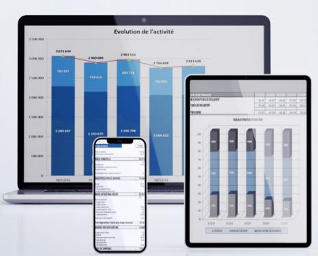

Avec l'assistant de gestion , maîtrisez rapidement l'analyse financière
Analyse financière par la dinamique des flux
Version etudiantes - 3.80 du 31/03/2023


L'assistant de gestion vous permet:
D'étendre rapidement vos connaissance en analyse financière grâce à de nombreux exemple de balance à importer, couvrant plusieurs secteurs d'activités: artisans, BTP, commerces alimentaires, ambulances, restoration, garages, etc...
De realiser en quelques minutes des dossiers de diagnostiques économiques et financiers complets sur plusieurs années(5ans).
Cette approche moyen terme permet de mieux appréhender le comportement économiques et financiers de l'entreprise.
De gagner un temps précieux dans la collectedes données en allant chercher l'imformation à la source (les balances) et éviter ainsi les saisies fastidieuses des documents de synthèse (bilans, et comptes de résultats).
En effet pour alimenter l'ASSISTANT DE GESTION, il suffit d'importer les balances de clôtures des comptes.
D'éditer très rapidement des rapport financiers financiers avec de nombreux grapihiques.
OBJECTIF DU LOGICIEL
L'objectif essentiel d'une analyse financière est de mesurer la santé financière d'une entreprise et de prévenir les risques de défaillances
Avec L'ASSISTANT DE GESTION, vous editerez plusieurs tableaux et de graphiques qui vous permettrons de suivre l'évolution de l'activité, de la réabilité et de l'equilibre
financière de l'entreprise. Vous pourrez ainsi suivre l'évolution de la trésorerie et les causes de la variation.
Exemples de graphoques et tableaux edités: